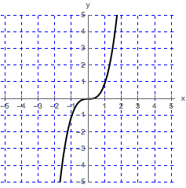
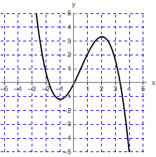

Sketch a graph of a function that is continuous on
\((-\infty ,\infty )\)
that has the following properties.
(a)
Function
\(f\)
does not have a local maximum or minimum.
\(f\)
contains a point where
\(f'(x)=0\)

(b)
\(g'(x)<0\)
on
\((-\infty , -1)\)
;
\(g'(x)>0\)
on
\((-1,2)\)
;
\(g'(x)<0\)
on
\((2,\infty )\)
.
